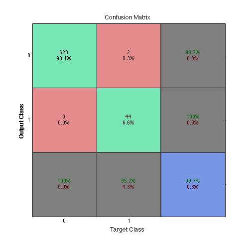

Applying the MMPC, MMPC-skeleton and MMHC algorithms
This demo illustrates the process of applying the MMPC, MMPC-skeleton and MMHC algorithm to learn the parents and children of a node, the skeleton, and the stucture, respectively, of the Alarm Bayesian network. Terms variable and node are used interchangeably.
Contents
- Creating a max-min local-to-global learner
- Learning the set of parents and children of a node
- Comparing the learned parents and children set with the true ones
- Learning the skeleton of the network
- Comparing the learned skeleton with the true one
- Learning the skeleton of the network without symmetry correction
- Creating a hill climber
- Learning the structure of the network
Creating a max-min local-to-global learner
MMPC is applied by a max-min local-to-global learner. A max-min local-to-global learner uses a d-separation determiner and a conditional-association calculator. A d-separation determiner determines d-separation relationships among a set of variables. A conditional association (CA) calculator calculates a measure of association of pairs of variables in a set given subsets of the rest variables in the set.
Here we use a conditional-independence-test-based d-separation determiner and a conditional-independence-test-based conditional-association calculator, which determines d-separations and calculates conditional associations, respectively, by performing conditional independence tests (CITs). Both use a conditional-independence-test-reliability-criterion applier and a conditional-independence-test-p-value estimator. A CIT-reliability-criterion applier determines, for a set of variables, if a CI test involving variables of the set is reliable according to a reliability criterion (RC). A CIT-p-value estimator estimates, for a set of variables, the p-value of CI tests involving variables of the set.
Here we use a heuristic-power-rule applier, which applies the heuristic power rule reliability criterion, and G-test applier, which applies the G CI test. Both use a sample from the joint probability distribution of a set of finite-domain variables. The sample is in the form of linear indices of variable values (that is, for a sample d, d(i, j) = k denotes that, in the i-th observation, the j-th variable takes its k-th value) and is accompanied by the number of values in the domain of each variable in the set.
We load a sample from the Alarm network. The sample is a Statistics Toolbox™ dataset array with categorical variables. We get the number of values for each variable by calling function org.mensxmachina.stats.array.datasetvarnvalues on the sample. We convert the sample to linear indices simply by calling its method double.
To speed-up the search for sepsets, we limit the maximal sepset cardinality to 10.
import org.mensxmachina.stats.array.datasetvarnvalues; import org.mensxmachina.stats.tests.ci.chi2.gtestpvalueestimator; import org.mensxmachina.stats.tests.ci.chi2.heuristic.heuristicapplier; import org.mensxmachina.pgm.bn.learning.cb.cit.citdsepdeterminer; import org.mensxmachina.pgm.bn.learning.cb.lg.gl.mm.cit.citcacalculator; import org.mensxmachina.pgm.bn.learning.cb.lg.gl.mm.mmlglearner; % load a sample from the Alarm network load('alarm_bayesnet_sample', 'Sample'); % get number of values of each variable in the sample varNValues = datasetvarnvalues(Sample); % convert sample to double sample = double(Sample); % create CIT-p-value estimator CITPValueEstimator = gtestpvalueestimator(sample, varNValues); % create CIT-RC applier CITRCApplier = heuristicapplier(sample, varNValues); % create d-separation determiner CITDSepDeterminer = citdsepdeterminer(CITRCApplier, CITPValueEstimator); % create and CA calculator CITCACalculator = citcacalculator(CITRCApplier, CITPValueEstimator); % create max-min local-to-global learner MMLGLearner = mmlglearner(... CITDSepDeterminer, CITCACalculator, 'maxSepsetCard', 10);
Learning the set of parents and children of a node
Now we learn the set of parents and children of node 37.
% learn parents and children of node 37
pc = MMLGLearner.learnpc(37)
Learning TPC(37)...
Learning TPC(11)...
Learning TPC(18)...
Learning TPC(36)...
pc =
11 36
Comparing the learned parents and children set with the true ones
Now we compare the learned parents and children with the true ones. For a given node, the task of learning its parents and children can be viewed as a binary classification task, where each other node is classified as either parent or child, or not. First we use Bioinformatics Toolbox™ function classperf to measure the classification performance. Then we use Neural Network Toolbox™ function plotconfusion to plot the confusion matrix. We see that we learn the parents and children of node 37 correctly.
% load Alarm network load('alarm_bayesnet', 'BayesNet'); % create true labels skeleton_true = BayesNet.skeleton(); % get true skeleton truelabels = full(skeleton_true(37, :) | skeleton_true(:, 37)'); truelabels(37) = []; % create classifier output classout = zeros(1, length(BayesNet.varNames)); classout(pc) = 1; classout(37) = []; % get classification performance cp = classperf(truelabels, classout, 'Positive', 1, 'Negative', 0); % print sensitivity and specificity fprintf('\nSensitivity = %.2f%%\n', cp.sensitivity*100); fprintf('\nSpecificity = %.2f%%\n', cp.specificity*100); % plot confusion matrix plotconfusion(truelabels, classout);
Sensitivity = 100.00% Specificity = 100.00%

Learning the skeleton of the network
A max-min local-to-global learner also applies MMPC-skeleton to learn the skeleton of the network. We learn the skeleton of the network. Output skeleton is a sparse matrix representing an undirected graph. A nonzero element in the lower triangle of the matrix denotes an edge in the graph.
% learn skeleton
skeleton = MMLGLearner.learnskeleton()
Learning TPC(1)... Learning TPC(2)... Learning TPC(3)... Learning TPC(4)... Learning TPC(5)... Learning TPC(6)... Learning TPC(7)... Learning TPC(8)... Learning TPC(9)... Learning TPC(10)... Learning TPC(11)... Learning TPC(12)... Learning TPC(13)... Learning TPC(14)... Learning TPC(15)... Learning TPC(16)... Learning TPC(17)... Learning TPC(18)... Learning TPC(19)... Learning TPC(20)... Learning TPC(21)... Learning TPC(22)... Learning TPC(23)... Learning TPC(24)... Learning TPC(25)... Learning TPC(26)... Learning TPC(27)... Learning TPC(28)... Learning TPC(29)... Learning TPC(30)... Learning TPC(31)... Learning TPC(32)... Learning TPC(33)... Learning TPC(34)... Learning TPC(35)... Learning TPC(36)... Learning TPC(37)... skeleton = (2,1) 1 (4,1) 1 (7,1) 1 (4,3) 1 (7,3) 1 (5,4) 1 (6,4) 1 (36,7) 1 (28,8) 1 (26,9) 1 (11,10) 1 (26,11) 1 (37,11) 1 (21,12) 1 (19,13) 1 (20,13) 1 (23,13) 1 (33,13) 1 (35,13) 1 (35,14) 1 (18,15) 1 (17,16) 1 (18,17) 1 (19,18) 1 (35,18) 1 (20,19) 1 (32,19) 1 (33,19) 1 (21,20) 1 (25,20) 1 (24,21) 1 (23,22) 1 (34,22) 1 (24,23) 1 (26,25) 1 (32,25) 1 (27,26) 1 (28,27) 1 (30,27) 1 (31,27) 1 (36,27) 1 (30,29) 1 (31,29) 1 (37,36) 1
Comparing the learned skeleton with the true one
Now we compare the learned skeleton with the true one. Skeleton identification can be viewed as binary classification where each pair of nodes is classified as link (positive) or non-link (negative). First we use classperf to measure the classification performance. Then we use plotconfusion to plot the confusion matrix.
import org.mensxmachina.graph.undigraphmat2vec; % create true labels truelabels = undigraphmat2vec(BayesNet.skeleton())'; % create classifier output classout = undigraphmat2vec(skeleton)'; % get classification performance cp = classperf(truelabels, classout, 'Positive', 1, 'Negative', 0); % print sensitivity and specificity fprintf('\nSensitivity = %.2f%%\n', cp.sensitivity*100); fprintf('\nSpecificity = %.2f%%\n', cp.specificity*100); % plot confusion matrix plotconfusion(truelabels, classout);
Sensitivity = 95.65% Specificity = 100.00%
Learning the skeleton of the network without symmetry correction
The first phase of MMHC is to apply MMPC-skeleton without symmetry correction. To this end, we create a max-min local-to-global learner without symmetry correction and use it to the learn the skeleton.
% create max-min local-to-global learner without symmetry correction MMLGLearner = mmlglearner(... CITDSepDeterminer, ... CITCACalculator, ... 'maxSepsetCard', 10, ... 'symCorrEnabled', false); % learn skeleton skeleton = MMLGLearner.learnskeleton();
Learning TPC(1)... Learning TPC(2)... Learning TPC(3)... Learning TPC(4)... Learning TPC(5)... Learning TPC(6)... Learning TPC(7)... Learning TPC(8)... Learning TPC(9)... Learning TPC(10)... Learning TPC(11)... Learning TPC(12)... Learning TPC(13)... Learning TPC(14)... Learning TPC(15)... Learning TPC(16)... Learning TPC(17)... Learning TPC(18)... Learning TPC(19)... Learning TPC(20)... Learning TPC(21)... Learning TPC(22)... Learning TPC(23)... Learning TPC(24)... Learning TPC(25)... Learning TPC(26)... Learning TPC(27)... Learning TPC(28)... Learning TPC(29)... Learning TPC(30)... Learning TPC(31)... Learning TPC(32)... Learning TPC(33)... Learning TPC(34)... Learning TPC(35)... Learning TPC(36)... Learning TPC(37)...
Creating a hill climber
The second phase of MMHC is hill-climbing. Hill climbing is performed by a hill-climber, which uses a local scorer. A local scorer scores, for a set of variables, the family of a variable (that is, the variable itself and its parents) in a Bayesian network representing the joint probability distribution of the variables.
MMHC uses the BDeu score, therefore we use a BDeu local scorer. A BDeu local scorer needs to be supplied a sample from the network in the same way as the p-value estimator and the RC applier above.
By default, a hill climber performs an unconstrained search in the space of DAGs. If a candidate parent matrix is supplied, however, the search is constrained to those DAGs with the set of parents of each node being a subset of the set of candidate parents of that node, as specified in the matrix. For a candidate parent matrix cpm, a nonzero cpm(i, j) indicates that node i is a candidate parent of node j.
import org.mensxmachina.pgm.bn.learning.structure.sns.local.bdeu.bdeulocalscorer; import org.mensxmachina.pgm.bn.learning.structure.sns.local.hc.hillclimber; % create local scorer LocalScorer = bdeulocalscorer(sample, varNValues); % create candidate parent matrix cpm = tril(skeleton + skeleton'); % create hill climber HillClimber = hillclimber(LocalScorer, 'CandidateParentMatrix', cpm);
Learning the structure of the network
Finally, we learn the structure of the network.
% learn structure
structure = HillClimber.learnstructure()
1) ADD(33 -> 19) (log score = -227332.02061, max) 2) ADD(28 -> 27) (log score = -221002.04443, max) 3) ADD(25 -> 20) (log score = -214852.65025, max) 4) ADD(6 -> 4) (log score = -208878.55441, max) 5) ADD(35 -> 18) (log score = -202912.76964, max) 6) ADD(24 -> 21) (log score = -197654.31718, max) 7) ADD(27 -> 26) (log score = -193591.06450, max) 8) ADD(18 -> 17) (log score = -189701.53898, max) 9) ADD(32 -> 25) (log score = -185873.98083, max) 10) ADD(4 -> 3) (log score = -182100.29165, max) 11) ADD(36 -> 7) (log score = -178601.16227, max) 12) ADD(17 -> 16) (log score = -175706.65125, max) 13) ADD(37 -> 11) (log score = -173074.95747, max) 14) ADD(18 -> 15) (log score = -170976.63258, max) 15) ADD(24 -> 23) (log score = -169316.25962, max) 16) ADD(37 -> 36) (log score = -167680.86122, max) 17) ADD(26 -> 11) (log score = -166163.36034, max) 18) ADD(2 -> 1) (log score = -164650.48779, max) 19) ADD(21 -> 20) (log score = -163284.83081, max) 20) REV(25 -> 20) (log score = -161620.10383, max) 21) REV(32 -> 25) (log score = -158682.94269, max) 22) ADD(19 -> 18) (log score = -157347.60542, max) 23) REV(35 -> 18) (log score = -152856.63188, max) 24) ADD(5 -> 4) (log score = -151698.74233, max) 25) REV(6 -> 4) (log score = -147551.74169, max) 26) ADD(23 -> 13) (log score = -146414.64048, max) 27) ADD(20 -> 19) (log score = -145485.81760, max) 28) REV(33 -> 19) (log score = -138881.12731, max) 29) ADD(32 -> 19) (log score = -137518.74363, max) 30) REV(32 -> 19) (log score = -134764.12067, max) 31) ADD(31 -> 27) (log score = -133858.98617, max) 32) REV(31 -> 27) (log score = -129509.29344, max) 33) ADD(30 -> 27) (log score = -128629.44036, max) 34) REV(28 -> 27) (log score = -124251.92449, max) 35) ADD(36 -> 27) (log score = -123275.30779, max) 36) REV(30 -> 27) (log score = -120803.10416, max) 37) ADD(7 -> 3) (log score = -120010.66400, max) 38) ADD(20 -> 13) (log score = -119228.87159, max) 39) ADD(19 -> 14) (log score = -118665.63260, max) 40) ADD(35 -> 14) (log score = -118072.30005, max) 41) ADD(21 -> 12) (log score = -117610.86457, max) 42) ADD(20 -> 12) (log score = -116992.01696, max) 43) ADD(26 -> 9) (log score = -116548.67743, max) 44) ADD(30 -> 29) (log score = -116131.34400, max) 45) REV(30 -> 29) (log score = -115136.69246, max) 46) ADD(31 -> 29) (log score = -114774.30883, max) 47) REV(31 -> 29) (log score = -113735.18129, max) 48) ADD(35 -> 13) (log score = -113408.81147, max) 49) REV(35 -> 13) (log score = -112726.84163, max) 50) REV(35 -> 14) (log score = -112392.12427, max) 51) ADD(28 -> 8) (log score = -112090.89998, max) 52) REV(28 -> 8) (log score = -111769.22735, max) 53) REV(7 -> 3) (log score = -111511.94619, max) 54) REV(36 -> 7) (log score = -110075.11304, max) 55) REV(37 -> 36) (log score = -109390.82601, max) 56) REV(37 -> 11) (log score = -107677.25242, max) 57) REV(36 -> 27) (log score = -106573.91932, max) 58) ADD(4 -> 1) (log score = -106384.18184, max) 59) REV(2 -> 1) (log score = -105717.03968, max) 60) ADD(33 -> 26) (log score = -105568.24024, max) 61) REV(27 -> 26) (log score = -105194.15666, max) 62) REV(26 -> 11) (log score = -105013.06211, max) 63) REV(26 -> 9) (log score = -104804.27903, max) 64) ADD(34 -> 22) (log score = -104661.85194, max) 65) ADD(7 -> 1) (log score = -104537.71288, max) 66) REV(7 -> 1) (log score = -104341.34878, max) 67) ADD(26 -> 25) (log score = -104219.93084, max) 68) REV(26 -> 25) (log score = -103769.42455, max) 69) ADD(23 -> 22) (log score = -103650.61000, max) 70) ADD(11 -> 10) (log score = -103544.35027, max) 71) ADD(19 -> 13) (log score = -103468.25901, max) 72) REV(19 -> 13) (log score = -103119.64175, max) 73) DEL(33 -> 26) (log score = -103043.67573, max) 74) REV(34 -> 22) (log score = -103031.00546, max) 75) ADD(24 -> 22) (log score = -103022.34791, max) 76) ADD(29 -> 8) (log score = -103022.19813, max) 77) REV(20 -> 12) (log score = -103022.19813) 78) REV(5 -> 4) (log score = -103022.19813) 79) REV(4 -> 1) (log score = -103022.19813) 80) REV(4 -> 3) (log score = -102993.40396, max) 81) REV(29 -> 8) (log score = -102993.40396) 82) REV(24 -> 21) (log score = -102993.40396) 83) REV(24 -> 23) (log score = -102152.79197, max) 84) REV(23 -> 13) (log score = -101816.62258, max) 85) REV(21 -> 12) (log score = -101816.62258) 86) REV(21 -> 20) (log score = -101816.62258) 87) REV(11 -> 10) (log score = -101816.62258) 88) ADD(26 -> 15) (log score = -101818.99836) 89) REV(20 -> 13) (log score = -101825.44885) 90) DEL(26 -> 15) (log score = -101823.07306) 91) DEL(24 -> 22) (log score = -101831.73061) 92) REV(23 -> 22) (log score = -101792.62412, max) 93) ADD(26 -> 15) (log score = -101794.99990) 94) ADD(34 -> 23) (log score = -101807.67840) 95) REV(34 -> 23) (log score = -101799.73509) 96) DEL(26 -> 15) (log score = -101797.35931) 97) REV(20 -> 19) (log score = -101812.08065) 98) REV(19 -> 18) (log score = -101527.24144, max) 99) REV(19 -> 14) (log score = -100968.63045, max) 100) REV(18 -> 17) (log score = -100968.63045) 101) REV(18 -> 15) (log score = -100390.01334, max) 102) REV(17 -> 16) (log score = -100390.01334) 103) ADD(33 -> 26) (log score = -100465.97937) 104) REV(33 -> 26) (log score = -100405.58755) 105) ADD(35 -> 19) (log score = -100482.45628) 106) REV(35 -> 19) (log score = -100482.45628) No successor. Stopping... structure = (1,2) 1 (1,4) 1 (3,4) 1 (4,5) 1 (4,6) 1 (1,7) 1 (3,7) 1 (10,11) 1 (17,16) 1 (15,18) 1 (17,18) 1 (13,19) 1 (14,19) 1 (18,19) 1 (12,20) 1 (13,20) 1 (19,20) 1 (12,21) 1 (20,21) 1 (13,23) 1 (22,23) 1 (21,24) 1 (23,24) 1 (20,25) 1 (9,26) 1 (11,26) 1 (25,26) 1 (26,27) 1 (8,28) 1 (27,28) 1 (8,29) 1 (27,30) 1 (29,30) 1 (27,31) 1 (29,31) 1 (19,32) 1 (25,32) 1 (19,33) 1 (22,34) 1 (23,34) 1 (13,35) 1 (14,35) 1 (18,35) 1 (7,36) 1 (27,36) 1 (11,37) 1 (36,37) 1